How-To Guides¶
On this page you find short instructional guides to project tasks and experimental work.
Measurements and Experiments¶
How do I find the COM port used by Bitscope?¶
For the Bitscope to function properly, you have to configure the proper COM port in the Bitscope setup. Here is how you can identify the proper COM port.
On Windows, open the device manager (by running ‘Device Manager’ from the search prompt). Look for the entry Ports (COM & LPT). If the MSP-EXP432P401R kit and the bitscope are both connected, you will find three COM ports are in use.
In the Bitscope setup, you would now use COMz as the proper configuration, where z is an integer. Examples are COM16, COM17, etc.
| Device Manager Entry | Purpose |
|---|---|
| XDS110 Class Application/User UART (COMx) | User UART for the MSP432P401R |
| XDS110 Class Auxiliary Data Port (COMy) | Programming/debug port for MSP432P401R |
| USB Serial Port (COMz) | Bitscope data port |
How do I minimize the noise in the measured bitscope signal?¶
Even though we are measuring signals with a relatively small bandwidth, it’s still possible to pick up a lot of noise, such as shown in the following trace.
This noisy image was recorded at 200mV/div, indicating there is significant disturbance. In this case, the noise was caused by improper grounding of the measurement setup. As shown in the setup, both the waveform generation signal, and the measured DAC output are measured using a single wire without ground. The net effect is a ‘ground loop’, where the common ground between MSP-432 kit and the bitscope runs through the USB cables.
With proper grounding, we obtain a clean signal. While grounding cannot eliminate all sources of interference, it will be a major contribution to measuring sharp traces in your DSP experiments.
Provide a ground signal for every live signal. You can use wire pairs and connect the ground signal on the MSP-432 kit side as well as on the bitscope side. The bottom header pins of the Hammerhead extension are all grounded.
Software Development¶
How do we add a project to our local Github repository?¶
- Right-click on the non-repo project and select ‘Team .. share ..’
- In the project sharing window, select the repository you want to add it to. Use the pull-down selector to get a list of currently-used repositories
How do we return code to Github from within Code Composer Studio?¶
- Right-click on your project in the project explorer and select ‘Team .. commit ..’. Note: If you don’t see ‘Team .. commit ..’ but only ‘Team .. share ..’, then your project is not included in a repository yet. Consult the previous question (How do we add a project to our local Github repository)
- In the ‘Git Staging’ window that appears, make sure that all the files you have changed are in the ‘Staged Changes’ window. Drag them from ‘Unstaged Changes’ to ‘Staged Changes’ if needed.
- In the ‘Git Staging’ window, add a comment message
- In the ‘Git Staging’ window, click on ‘Commit and Push’. It’s a good idea to open a browser afterwards, go to github.com and verify that your repository has been updated with your code.
Digital Signal Processing Theory¶
How do I go from z-plan poles and zeroes to G(z) and vice versa?¶
The filter transfer function 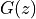 and its z-plane features are related as follows. Writing as 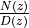, then the zeroes of are the values of z where 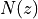 is zero, and the poles of are the values of z where 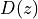 is zero.
From z-plane to G(z)
Here’s an example. Pick a point in the z-plane defined by . To create a zero, we would form the expression
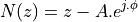
We are used to see G(z) written in terms of 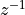. So, let’s introduce 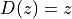 and compute .
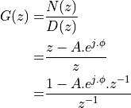
In order to make G(z) causal (i.e., only negative powers of z), we are introducing a pole at the
center of the unit circle. G(z) has the following impulse response:  , followed by 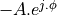.
, followed by 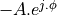.
When G(z) needs to have real coefficients, the zeroes (and poles) have to appear in conjugate pairs. Let’s for example create an H(z) containing two zeroes, one at and one at , then we would create:
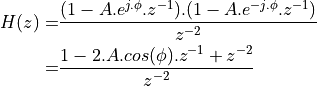
To make H(z) causal, we have to introduce a double pole at the center of the unit circle.
From G(z) to z-plane
We use a root finding program, such as the roots function in Matlab.
Here’s an example. If you have the following G(z)
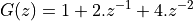
Then we would have the following equation in terms of z:
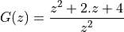
In matlab we would compute roots([1 2 4]) which gives a complex conjugate pair  . This corresponds to two
zeroes located outside of the unit circle.
. This corresponds to two
zeroes located outside of the unit circle.